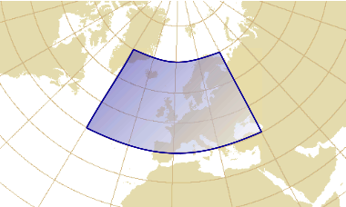

Systèmes de références spatiales
Pour donner une position sur la Terre on peut utiliser des noms tels que celui d’une ville ou une adresse postale
— on parle alors de références spatiales par identifiants —
ou on peut donner des valeurs numériques valides dans un système de coordonnées donné
— on parle alors de références spatiales par coordonnées.
Chaque système implique des approximations telles que:
- Le choix de la forme géométrique (géoïde, ellipsoïde, etc.) utilisée comme approximation de la forme de la Terre.
- Le choix des propriétés géométriques (angles, distances, etc.) à préserver lors de la représentation d’une carte sur une surface plane.
- Les pertes de précision lorsque l’on doit transformer des positions exprimées selon un système vers des positions exprimées selon un autre système.
En l’absence d’indication contraire, la précision recherchée pour les coordonnées sur la Terre est de 1 centimètre.
Mais la maîtrise de cette précision nécessite le respect de certaines conditions:
- Rester dans la zone de validité du système telle que donnée par
ReferenceSystem.getDomainOfValidity().
- Savoir que les mesures de distances dans une projection cartographique donnée ne sont vraies qu’à certains endroits,
appelés par exemple « parallèles standards ».
- Vérifier la précision des transformations de coordonnées, par exemple avec
CoordinateOperation.getCoordinateOperationAccuracy().
Le module sis-referencing de Apache SIS fournit une série de classes implémentant
les différentes spécialisations de l’interface ReferenceSystem ainsi que leurs composantes.
Ces implémentations permettent de stocker une description des systèmes de références spatiales
ainsi que leurs méta-données telles que la zone de validité.
Toutefois ces objets n’effectuent aucune opération sur les coordonnées.
Ces opérations sont le travail d’une autre famille de classes, dont la racine est l’interface CoordinateOperation.
Ces classes seront discutées dans une autre section,
mais nous citons ici deux spécialisations en rapport avec le sujet de la précision des coordonnées:
-
Les conversions de coordonnées sont entièrement définies par une formule mathématique.
Les conversions s’effectueraient avec une précision infinie s’il n’y avait pas les inévitables
erreurs d’arrondissements inhérents aux calculs sur des nombres réels.
Exemple: les projections cartographiques.
Les transformations de coordonnées sont définies de manière empirique.
Elles ont souvent des erreurs de quelques mètres qui ne sont pas dues à des limites de la précision des ordinateurs.
Ces erreurs découlent du fait que la transformation utilisée n’est qu’une approximation d’une réalité plus complexe.
Exemple: les changements de référentiels tel que le passage de la
Nouvelle Triangulation Française (NTF) vers le
Réseau Géodésique Français 1993 (RGF93),
même lorsque la méthode de projection cartographique (Lambert conique conforme) ne change pas.
Composantes d’un système de références par coordonnées
Les systèmes de références spatiales par coordonnées fournissent les informations nécessaires pour faire
correspondre des coordonnées numériques à des positions dans le monde réel. Dans Apache SIS,
ils sont pratiquement tous représentés par des classes dont le nom se termine en CRS
(l’abréviation de Coordinate Reference System en anglais). Ces objets contiennent:
- Un identifiant du référentiel (datum en anglais),
qui indique entre autres quel ellipsoïde utiliser comme approximation de la forme de la terre.
- Une description de chaque axe (nom, direction, unité de mesure, limites).
- Parfois une liste de paramètres permettant de convertir les coordonnées d’un autre système.
C’est le cas notamment des projections cartographiques.
Ces systèmes sont décrits par la norme ISO 19111 (Referencing by Coordinates),
qui remplace en grande partie une norme plus ancienne mais encore utilisée pour certains aspects,
OGC 01-009 (Coordinate Transformation Services).
Ces normes sont complétées par deux autres standards définissant des formats d’échanges:
ISO 19136 et 19162 pour respectivement
le Geographic Markup Language (GML) — un format XML précis mais verbeux —
et le Well-Known Text (WKT) — un format texte plus facile à lire par les humains.
Géoïde et ellipsoïde
La surface topographique réelle étant difficile à représenter mathématiquement, elle n’est pas utilisée directement en cartographie.
Une autre surface un peu plus facilement utilisable est le géoïde,
une surface sur laquelle la force gravitationnelle a partout la même valeur (surface équipotentielle du champ de gravité terrestre).
Cette surface est en tout point perpendiculaire à la direction indiquée par un fil à plomb (verticale du lieu).
Le géoïde coïnciderait avec le niveau moyen des mers s’il n’y avait ni vent ni courants marins permanents comme le Gulf Stream.
Tout en étant nettement plus lisse que la surface topographique,
le géoïde présente des creux et des bosses liés à l’inégale distribution des masses de la Terre.
Pour une utilisation mathématiquement plus aisée, le géoïde est donc approximé par un ellipsoïde.
Cette « figure de la Terre » est représentée dans GeoAPI par l’interface Ellipsoid,
qui constitue un élément fondamental des systèmes de références de type GeographicCRS et ProjectedCRS.
Plusieurs dizaines d’ellipsoïdes sont couramment employés, certains offrant une excellente approximation pour une région précise
au détriment des régions pour lesquelles l’ellipsoïde n’a pas été conçu, et d’autres offrant un compromis pour l’ensemble de la planète.
Exemple:
au début du XXe siècle aux États-Unis, l’état du Michigan utilisait pour ses cartes un ellipsoïde basé
sur l’ellipsoïde « Clarke 1866 » mais auquel la longueur des axes a été allongée de 800 pieds.
Cette modification visait à tenir compte du niveau moyen de l’état au dessus du niveau de la mer.
Référentiel géodésique
Pour définir un système géodésique dans un pays, l’état met en place un ellipsoïde de référence
qui épouse au mieux sur l’ensemble du pays la forme locale du géoïde.
L’écart entre cet ellipsoïde de référence et les creux et les bosses du géoïde reste généralement inférieur à 100 mètres.
Les paramètres qui permettent de lier un Ellipsoid à la surface de la Terre (par exemple la position de son centre)
sont représentées par un objet de type GeodeticDatum, que l’on traduit en français par « référentiel géodésique ».
Plusieurs GeodeticDatum peuvent utiliser le même Ellipsoid, mais centré ou orienté différemment.
Avant l’avènement des satellites, les mesures géodésiques se déroulaient exclusivement à la surface de la terre.
En conséquence, deux îles ou continents qui ne sont pas à portée visuelle l’un de l’autre n’étaient pas rattachés géodésiquement entre eux.
Ainsi les référentiels North American Datum 1983 (NAD83) et
European Datum 1950 (ED50) sont indépendants l’un de l’autre:
leurs ellipsoïdes de référence ont des centres distincts et des dimensions différentes.
Une même coordonnée géographique correspondra à des positions différentes dans le monde réel
selon que la coordonnée se réfère à l’un ou l’autre de ces référentiels.
L’invention du GPS a précipité la création d’un système géodésique mondial,
nommé WGS84.
L’ellipsoïde de référence est alors unique et centré au centre de gravité de la terre.
Les GPS donnent à tout moment la position absolue du récepteur rapportée à ce système géodésique.
Mais WGS84 étant un système mondial, il peut diverger significativement des systèmes locaux.
Par exemple l’écart entre WGS84 et le système européen ED50 est de l’ordre de 150 mètres,
et l’écart moyen par rapport au système de l’île de la Réunion 1947 est de 1,5 kilomètres.
Il ne faut donc pas rapporter aveuglement des positions GPS sur une carte.
Des correspondances avec les systèmes régionaux peuvent être nécessaires
et sont représentées dans GeoAPI sous forme d’objets de type Transformation
(une classe d’opérations mentionnée dans l’introduction de ce chapitre).
Les généralisation de l’usage du système WGS84 tend à réduire le besoin d’utiliser
les objets Transformation pour les données récentes, mais ne l’élimine pas complètement.
La Terre bouge sous l’effet de la tectonique des plaques et de nouveaux systèmes sont définis chaque année pour en tenir compte.
Même le système WGS84, sensé correspondre à une définition à un instant donné,
a subit des révisions dues notamment à l’amélioration de la précision des instruments.
Ainsi il existe aujourd’hui au moins six versions de WGS84, avec des écarts entre elles allant jusqu’à 7 centimetres.
En outre beaucoups de bordures ont été définies légalement dans des référentiels plus anciens, par exemple NAD27 aux États-Unis.
Mettre à jour dans un nouveau référentiel obligerait à transformer des lignes droites ou des formes géométriques simples en des formes beaucoup plus irrégulières
si on ne veut pas que des parcelles de terrain changent de propriétaire.
Bibliothèques de type « early binding » versus « late binding »
Le caractère universel du système WGS84 rend tentante l’idée de l’utiliser comme système pivot,
afin de simplifier l’implémentation d’une bibliothèque de transformation de coordonnées.
La transformation d’une coordonnée d’un référentiel A vers un référentiel B
pourrait se faire en transformant d’abord de A vers WGS84, puis de WGS84 vers B.
Il suffirait ainsi de stocker dans chaque objet GeodeticDatum les informations nécessaires à la transformation vers WGS84.
Cette approche était encouragée dans la version 1 du format WKT, qui définissait un élément TOWGS84 remplissant ce rôle.
Cette approche est désignée par EPSG sous le nom de « early binding »,
car elle associe des informations sur la transformations de coordonnées très tôt dans la définition des objets géodésiques.
Bien que EPSG reconnaisse que cette approche soit couramment employée, elle n’est pas recommandée pour plusieurs raisons:
- Il existe parfois plusieurs transformations allant d’un référentiel A vers B,
chacune étant plus précise pour une région géographique donnée.
Par exemple il existe une cinquantaine de transformations de NAD27 vers NAD83.
- Certaines opérations sont conçues spécifiquement pour transformer de A vers B
et n’ont pas la même précision qu’aurait une autre transformation faisant un détour par WGS84.
- Il existe d’autres systèmes globaux qui pourraient servir de pivot, par exemple le Galileo Reference Frame (GTRF)
mis en place par le concurrent européen du GPS. Et WGS84 lui-même subit parfois des révisions.
EPSG recommande plutôt d’utiliser une approche dite « late binding »,
selon laquelle les paramètres nécessaires aux transformations de coordonnées sont définis pour des paires de
référentiels « A vers B » plutôt qu’associés à des référentiels pris isolément.
Apache SIS est une implémentation de type « late binding »,
bien qu’une réminiscence de l’approche « early binding » existe toujours
sous la forme de la propriété DefaultGeodeticDatum.getBursaWolfParameters().
Systèmes de coordonnées
TODO
Systèmes géographiques
TODO
Format Well-Known Text
TODO
Projections cartographiques
L’utilité des projections cartographiques est discutée dans de nombreux livres et sites web.
Il s’agit de représenter une surface courbe (la Terre) sur une surface plane (une carte ou un écran d’ordinateur)
en contrôlant les déformations: on peut préserver les angles ou les surfaces, mais pas les deux à la fois.
Les propriétés géométriques à conserver dépendent de l’objet d’étude et du travail à effectuer.
Par exemple les pays plutôt allongés dans le sens Est-Ouest utilisent souvent une projection de Lambert,
alors que les pays plutôt allongés dans le sens Nord-Sud préfèrent une projection de Mercator Transverse.
TODO
Format Well-Known Text
TODO
Dimensions verticales et temporelles
TODO
Format Well-Known Text
TODO
Obtention d’un système de référence spatial
TODO
Systèmes prédéfinis par des autorités
TODO
Lecture d’une définition au format GML ou WKT
TODO
Construction programmatique explicite
TODO
Ajout de définitions
TODO
Opérations sur les coordonnées
TODO
TODO
Parmi les sortes d’opérations qu’un SIG doit effectuer sur les coordonnées spatiales, il en est une à la fois simple et très fréquente.
Ce sont les opérations linéaires, constituées uniquement d’une combinaison d’additions et de certaines multiplications.
Ces opérations n’effectuent pas de projections cartographiques, plus complexes, mais couvrent de nombreux autres cas:
- Changer l’ordre des axes, par exemple de (latitude, longitude) vers (longitude, latitude).
- Changer la direction des axes (par exemple l’axe des y des images pointe souvent vers le bas).
- Changer de méridien d’origine (par exemple de Paris vers Greenwich).
- Changer le nombre de dimensions (par exemple passer des coordonnées 3D vers 2D).
- Convertir des unités de mesures (par exemple convertir des pieds en mètres).
- Convertir les coordonnées pixels d’une image en coordonnées géographiques
(par exemple la conversion exprimée dans les fichiers
.tfw qui accompagnent certaines images TIFF).
- Prendre en charge une petite partie des projections cartographiques
(par exemple les paramètres False Easting, False Northing et Scale factor).
- Appliquer des rotations, translations, échelles ou cisaillements (des transformations dites affines).
Les opérations linéaires ont la propriété de toujours se combiner:
peu importe le nombre d’opérations linéaires que l’on enchaîne, le résultat sera toujours exprimable par une seule opération linéaire.
Cette propriété est plus facilement visible lorsque les opérations linéaires sont exprimées sous forme de matrices:
pour combiner les opérations, il suffit de multiplier les matrices.
Example:
supposons que nous disposons d’une image dont les coordonnées des pixels sont représentées par (i,j).
Supposons que la taille de chaque pixel correspond à un nombre fixe de degrées de longitude et de latitude
dans un système géographique donné et qu’il n’y a pas de rotation.
La conversion des coordonnées pixels (i,j) vers les coordonnées géographiques (λ,φ)
est alors linéaire et peut être représentée par la matrice suivante:
|
|
où
|
- S est un facteur d’échelle (Scale) correspondant dans cet exemple à la taille des pixels.
- H est un terme de cisaillement (Shear), habituellement zéro sauf si l’image a une rotation.
- T est une translation (Translation) correspondant dans cet exemple à la coordonnée d’un coin de l’image.
|
Concentrons notre attention sur la matrice du milieu dans l’équation ci-dessus.
Si nous n’interchangeons ni n’inversons la direction d’aucun axe, alors une conversion des coordonnées pixels vers les coordonnées géographiques
pourrait s’exprimer par la matrice « conversion originale » ci-dessous.
Mais si l’on veut en outre inverser la direction de l’axe des j pour se conformer à la convention la plus courante appliquée aux images
(« changement 1 ») et interchanger l’ordre des axes pour exprimer la latitude avant la longitude (« changement 2 »),
alors on peut exprimer ces modifications par des multiplications matricielles comme suit
(l’ordre dans laquelle les opérations sont effectuées sur les coordonnées se lit de droite à gauche):
| Changement 2 | |
Changement 1 | |
Conversion originale | |
Conversion modifiée |
|
|
× |
|
× |
|
= |
|
L’idée principale est qu’il n’y a pas besoin d’écrire un code dédié à l’inversion des axes.
Cette opération, et bien d’autres, est prise en compte naturellement par l’algèbre matricielle.
On y gagne en généricité du code et en performance.
TODO
Particularités d’une bibliothèque de calculs matriciels pour un SIG
Les SIG font un usage intensif de matrices afin d’afficher leurs cartes ou transformer des coordonnées.
On pourrait croire que le marché est suffisamment bien pourvu en excellentes bibliothèques de calculs matriciels, libres ou commerciales.
Pourtant, les SIG ont des besoins spécifiques qui divergent un peu des objectifs de plusieurs bibliothèques existantes.
Des manipulations de matrices comme l’exemple précédent interviennent dans quasiment toutes les opérations
appliquées par Apache SIS sur des coordonnées.
Mais l’analyse de ces opérations révèle quelques patterns:
Ces matrices sont presque toujours de petites tailles, dépassant rarement 5 lignes par 5 colonnes.
Les opérations matricielles « lourdes » (multiplications ou inversions de matrices) ne surviennent pas dans des endroits où la performance est importante.
Dans la quasi-totalité des cas, elles ne sont effectuées qu’une fois pour toute, à la lecture d’un fichier,
ou lors des étapes de préparation avant de convertir des coordonnées.
Elles ne surviennent quasiment jamais dans la boucle convertissant chacune des coordonnées.
Dans une succession de multiplications et d’inversions de matrices, les erreurs d’arrondissement s’accumulent et grandissent rapidement
au point de se confondre avec certaines opérations légitimes, notamment les changements de référentiel.
Ces dernières s’expriment souvent par un changement de la taille, position et orientation de l’ellipsoïde
choisi comme approximation de la forme de la Terre. Les changements de la taille s’expriment en parties par million et
les rotations en arc-secondes. Retranscrites dans une matrice, ces valeurs sont donc assez petites.
Il arrive fréquemment que des matrices s’annulent en tout ou en partie,
c’est-à-dire que leurs multiplications ramènent des facteurs d’échelles à 1 et des translations à 0.
Toutefois les erreurs d’arrondissements font que les valeurs obtenues sont rarement exactes,
mais plutôt des valeurs s’en rapprochant telles que 0,9999…97 à la place de 1.
Malheureusement, les erreurs d’arrondissement sont parfois telles qu’il est difficile de savoir
si certains coefficients de la matrices sont des artefacts ou proviennent d’un réel changement de référentiel.
Ces points font que, pour un SIG, la précision d’une bibliothèque de calculs matriciels
est plus importante que la performance. Paradoxalement, un bon moyen de gagner en performance est justement d’investir davantage de temps de CPU
pour effectuer des opérations matricielles plus précises, car on augmente ainsi les chances de détecter correctement quelles opérations s’annulent.
L’effort investit dans cette détection permet de sauver du temps là où ça compte: quand viendra le moment de boucler sur des millions de coordonnées à transformer.
Mais les bibliothèques dédiées aux calculs matriciels sont souvent conçues pour opérer de manière très performante
sur des matrices de grandes tailles, ayant par exemple des milliers de lignes et colonnes.
Elles sont ainsi conçues pour être capable de résoudre efficacement des systèmes d’équations linéaires comportant des centaines d’inconnues.
Les problèmes qu’elles résolvent sont certes difficiles, mais assez différents de ceux qui intéressent Apache SIS.
Pour cette raison, et aussi à cause d’un autre besoin spécifique détaillé dans les paragraphes suivants,
Apache SIS utilise ses propres fonctions de calculs matriciels.
Ces fonctions tentent de résoudre le problème de précision en utilisant l’arithmétique « double-double »
(une technique permettant de simuler une précision d’environ 120 bits)
au prix de la performance dans une partie du code où elle n’est pas jugée critique.
Que faire des matrices qui ne sont pas carrées (et pourquoi)
Apache SIS a très souvent besoin d’inverser des matrices,
afin d’obtenir une conversion de coordonnées qui fasse le contraire de la conversion originale.
Mais on n’inverse habituellement que des matrices carrées.
Or, Apache SIS a besoin d’effectuer des inversions de matrices non-carrées.
Selon que l’on ait plus de lignes ou plus de colonnes:
- Pour SIS, une matrice non-carrée est une conversion qui ajoute ou supprime une dimension aux coordonnées.
- Pour les bibliothèques d’algèbre linéaire, une matrice non-carrée est un système d’équations sous-déterminé ou surdéterminé.
Pour mieux comprendre les difficultés que causerait une transposition trop directe des bibliothèques d’algèbre linéaire aux SIG,
imaginons une conversion qui projetterait les points d’un espace 3D vers une surface 2D:
| (λ₁, φ₁, h) → (λ₂, φ₂) |
où |
- λ est la longitude.
- φ est la latitude.
- (λ₂, φ₂) n’égale pas forcement (λ₁, φ₁) si la hauteur h n’est pas perpendiculaire à la surface.
|
Pour des bibliothèques d’algèbre linéaire, la matrice représentant cette conversion serait un système d’équations sous-déterminé, et donc insoluble.
C’est-à-dire qu’on ne peut pas inverser cette conversion pour obtenir (λ₂, φ₂) → (λ₁, φ₁, h) puisqu’on ne sait pas quelle valeur donner à h,
ce qui implique qu’on ne peut pas trouver (λ₁, φ₁) non-plus car ces valeurs dépendent peut-être de h.
Toutefois, dans le cas des SIG, l’axe des h est très souvent perpendiculaire à la surface sur laquelle sont exprimées les coordonnées (λ,φ).
Cette perpendicularité rend λ₁ et φ₁ indépendants de h. Dans ce cas particulier, et ce cas seulement, on peut encore sauver les meubles.
Apache SIS procède en vérifiant si les coordonnées h sont indépendantes des coordonnées λ et φ.
Nous reconnaissons ce cas en vérifiant quels coefficients de la matrice ont la valeur zéro.
Si SIS arrive à identifier des dimensions indépendantes,
il peut les exclure temporairement de manière à inverser sans ambiguïté la conversion dans les dimensions restantes.
S’il ne trouve pas de dimension indépendante, alors une exception est levée.
Si une inversion a été possible, alors il reste à décider du sort des dimensions que SIS avait temporairement exclues.
Dans notre exemple, SIS assignera la valeur NaN (Not-a-Number) aux valeurs de h dans la conversion (λ₂, φ₂) → (λ₁, φ₁, h).
Là encore, le choix du coefficient à mettre à NaN dans la matrice est basé sur la présomption qu’elle représente une conversion de coordonnées.
Le traitement particulier fait par SIS permet donc d’inverser des matrices que l’on rencontre couramment dans les SIG,
même si en principe le système est sous-déterminé.
Dans notre exemple la coordonnée h reste inconnue – nous ne faisons pas surgir de l’information du néant – mais au moins les coordonnées (λ,φ) ont pu être récupérées.
Le problème inverse, celui des systèmes surdéterminés, est plus subtil.
Une approche classique des bibliothèques d’algèbre linéaire est de résoudre les systèmes surdéterminés par la méthode des moindres carrées.
Transposée à notre exemple, cette approche proposerait une conversion (λ₂, φ₂, h) → (λ₁, φ₁)
qui semble le meilleur compromis pour diverses valeurs de λ₂, φ₂ et h, tout en n’étant (sauf cas particuliers) une solution exacte pour personne.
De plus, les éventuelles combinaisons linéaires entre ces trois variables sont délicates compte tenu de l’hétérogénéité des unités de mesures,
où les h sont en mètres et (λ,φ) en degrés.
Apache SIS procède plutôt comme pour les systèmes sous-déterminés: en exigeant que certaines dimensions soient indépendantes des autres,
faute de quoi la matrice sera considérée non-inversible.
Dans le cas des systèmes surdéterminés SIS refusera donc d’effectuer certaines opérations que les bibliothèques d’algèbre linéaire auraient faite,
mais garantira que les conversions obtenues seront exactes (aux erreurs d’arrondissement prêts).
En résumé, les besoins qui ont amené Apache SIS à fournir ses propres fonctions de calculs matriciels sont:
- Structure légère pour les petites matrices, particulièrement celles de taille 3×3.
- Précision accrue avec l’arithmétique « double-double », quitte à sacrifier un peu de performance dans des endroits où elle n’est pas critique.
- Traitement particulier de l’inversion des matrices non-carrées pour des conversions de coordonnées.
La section précédente indiquait comment calculer les coordonnées d’un point géographique dans une projection au choix.
Mais il existe une autre opération moins connue, qui consiste à calculer non pas la coordonnées projetée d’un point,
mais plutôt la dérivée de la fonction de projection cartographique en ce point.
Cette opération était définie dans une ancienne spécification du consortium Open Geospatial,
OGC 01-009, aujourd’hui un peu oubliée mais pourtant encore utile.
Appelons P une projection cartographique qui convertit une longitude et latitude (λ,φ) en degrés
vers une coordonnée projetée (x,y) en mètres.
Dans l’expression ci-dessous, nous représentons le résultat de la projection cartographique
sous forme d’une matrice colonne (la raison sera plus claire bientôt):
La dérivée de la projection cartographique en ce même point peut se représenter par la matrice Jacobienne définie tel que:
Dans la suite de ce texte nous abrégerons ∂x(λ,φ) par ∂x et de même pour ∂y,
mais il faut garder à l'esprit que chacune de ces valeurs dépendent de la coordonnée (λ,φ) originale.
Le premier élément de la matrice (∂x/∂λ) nous indique à quel déplacement vers l’Est
(x en mètres) correspond un déplacement de un degré de longitude (λ).
De même, le dernier élément de la matrice (∂y/∂φ) nous indique à quel déplacement vers le Nord
(y en mètres) correspond un déplacement de un degré de latitude (φ).
Les autres éléments (∂x/∂φ et ∂y/∂λ) sont des termes croisés (par exemple à quel déplacement
en mètres vers le Nord correspond un déplacement de un degré de longitude).
Ces valeurs ne sont généralement valides qu’à la position géographique (λ,φ) donnée.
Si on se déplace un peu, ces valeurs changent légèrement.
Cette matrice nous donne toutefois une bonne idée du comportement de la projection dans le voisinage du point projeté.
On peut se représenter visuellement cette matrice comme ci-dessous.
Cette figure représente la dérivée en deux points, P1 et P2,
pour mieux illustrer le fait que le résultat varie en chaque point.
Dans cette figure, les vecteurs U et V désignent respectivement
la première et deuxième colonne des matrices de dérivées.
 |
où les vecteurs sont reliés à la matrice par:
|
Cette figure nous montre déjà une utilisation possible des dérivées:
elles donnent la direction des parallèles et des méridiens à une position donnée dans une projection cartographique.
Par extension, on peut aussi s’en servir pour déterminer si des axes sont interchangés,
ou si la direction d’un axe est renversée. Mais l’intérêt des dérivées ne s’arrête pas là.
Utilité des dérivées pour la reprojection d’enveloppes
Les systèmes d’information géographiques ont très fréquemment besoin de projeter une enveloppe.
Mais l’approche naïve, qui consisterait à projeter chacun des 4 coins du rectangle, ne suffit pas.
La figure ci-dessous montre une enveloppe avant le projection, et la forme géométrique que l’on obtiendrait
si on projetait finement l’enveloppe (pas seulement les 4 coins). Cette forme géométrique est plus complexe
qu’un simple rectangle à cause des courbures induites par la projection cartographique.
Construire une enveloppe rectangulaire qui engloberait les 4 coins de cette forme géométrique ne suffit pas,
car la surface en bas de la forme est plus basse que les 2 coins du bas.
Cette surface serait donc en dehors du rectangle.
| Enveloppe avant la projection |
Forme géométrique après la projection |
 |
 |
Une façon simple d’atténuer le problème est d’échantillonner un plus grand nombre de points sur chacun des
bords de la forme géométrique. On trouve ainsi des bibliothèques de SIG qui vont par exemple
échantillonner 40 points sur chaque bord, et construire un rectangle qui englobe tout ces points.
Mais même avec 40 points, les échantillons les plus proches peuvent encore être légèrement à côté du point le plus bas de la figure.
Une petite portion de la forme géométrique peut donc toujours se trouver en dehors du rectangle.
Il est tentant de considérer cette légère erreur comme négligeable, mais quelques pixels manquants
entraînent divers artefacts comme une apparence de quadrillage lors de l’affichage d’images tuilées,
ou une “pointe de tarte” manquante lors de la projection d’images sur un pôle.
Augmenter artificiellement d’un certain pourcentage la taille de l’enveloppe projetée peut éliminer ces artefacts dans certains cas.
Mais un pourcentage trop élevé fera traiter plus de données que nécessaire
(en particulier lorsque cela entraîne le chargement de nouvelles tuiles d’images),
alors qu’un pourcentage trop faible laissera quelques artefacts.
Les dérivées des projections cartographiques permettent de résoudre ce problème d’une manière plus efficace que la force brute.
La figure ci-dessous reprend la forme projetée en exagérant des déformations.
L’approche consiste à calculer la projection cartographiques des 4 coins comme dans l’approche naïve,
mais en récupérant aussi les dérivées de la projection de ces 4 coins.
Entre deux coins et avec leurs dérivées, on peut faire passer une et une seule courbe cubique
(de la forme f(x) = C₀ + C₁x + C₂x² + C₃x³),
dont on peut calculer les coefficients C.
Cette approximation (représentée en rouge ci-dessous) ne correspond pas tout-à-fait à la courbe désirée (en bleue) mais s’en rapproche.
Ce qui nous intéresse n’est pas vraiment les valeurs de l’approximation, mais plutôt la position de son minimum,
en particulier la longitude λ où se trouve ce minimum dans notre exemple (ligne pointillée verte).
L’avantage est que la position du minimum d’une courbe cubique est facile à calculer lorsque l’on connaît les valeurs de C.
En supposant que la longitude du minimum de la courbe cubique est proche de la longitude du minimum de la courbe réelle,
il suffit de calculer la projection cartographique d’un point à cette longitude plutôt que d’échantillonner 40 points sur le bord de l’enveloppe.

|
Légende:
- En bleue: la forme géométrique correspondant à la projection de l’enveloppe.
C’est la forme dont on souhaite avoir le rectangle englobant.
- En rouge (sous les hachures): L’approximation
y = C₀ + C₁λ + C₂λ² + C₃λ³.
- En vert (pointillés): La position λm du minimum de l’approximation, trouvée en résolvant
0 = C₁ + 2C₂λm + 3C₃λm².
Il peut y avoir jusqu’à deux minimums pour une même courbe cubique.
|
Dans la pratique Apache SIS utilise 8 points, soit les 4 coins plus un point au centre de chaque bord du rectangle à projeter,
afin de réduire le risque d’erreur qu’induirait une courbe trop tordue entre deux points.
Selon nos tests, l’utilisation de ces seuls 8 points avec leurs dérivées comme décrit ci-haut
donne un résultat plus précis que l’approche “force brute” utilisant un échantillonnage de 160 points sur les 4 bords du rectangle.
La précision de SIS pourrait être encore améliorée en répétant le processus à partir du minimum trouvée
(une ou deux itérations suffiraient peut-être).
Une économie de 150 points n’est pas énorme vu les performances des ordinateurs d’aujourd’hui.
Mais toute la discussion précédente utilisait une forme géométrique à deux dimensions en guise d’exemple,
alors que l’algorithme est applicable dans un espace à n dimensions.
Et de fait, l’implémentation de Apache SIS fonctionne pour un nombre arbitraire de dimensions.
Les économies apportées par cet algorithme par rapport à la force brute augmentent de manière exponentielle avec le nombre de dimensions.
L’approche décrite dans cette section est implémentée dans Apache SIS
par la méthode statique Envelopes.transform(CoordinateOperation, Envelope).
Une méthode Envelopes.transform(MathTransform, Envelope) existe aussi comme alternative,
mais cette dernière ne devrait être utilisée que si on ne connaît pas l’objet CoordinateOperation utilisé.
La raison est que les objets de type MathTransform ne contiennent pas d’information sur le système de coordonnées sous-jasent,
ce qui empêche la méthode Envelopes.transform(…) de savoir comment gérer les points aux pôles.
Utilité des dérivées pour la reprojection d’images
La projection cartographique d’une image s’effectue en préparant une image initialement vide qui contiendra le résultat de l’opération,
puis à remplir cette image en itérant sur tous les pixels. Pour chaque pixel de l’image destination, on obtient la coordonnées
du pixel correspondant dans l’image source en utilisant l’inverse de la projection cartographique que l’on souhaite appliquer.
La position obtenue ne sera pas nécessairement au centre du pixel de l’image source, ce qui implique qu’une interpolation de la valeur
(ou de la couleur dans l’image ci-dessous) peut être nécessaire.
| Image source |
Image destination |
 |
Toutefois, calculer la projection inverse pour chacun des pixels peut être relativement lent.
Afin d’accélérer les calculs, on utilise parfois une grille d’interpolation
dans laquelle on a pré-calculé les coordonnées de la projection inverse de seulement quelques points.
Les coordonnées des autres points se calculent alors par des interpolations bilinéaires entre les points pré-calculés,
calculs qui pourraient éventuellement tirer parti d’accélérations matérielles sous forme de transformations affines.
Cette approche est implémentée par exemple dans la bibliothèque Java Advanced Imaging avec l’objet WarpGrid.
Elle offre en outre l’avantage de permettre de réutiliser la grille autant de fois que l’on veut si on a plusieurs images de même
taille à projeter aux mêmes coordonnées géographiques.
Mais une difficulté de cette approche est de déterminer combien de points il faut pré-calculer pour que l’erreur
(la différence entre une position interpolée et la position réelle) ne dépasse pas un certain seuil (par exemple ¼ de pixel).
On peut procéder en commençant par une grille de taille 3×3, puis en augmentant le nombre de points de manière itérative:
 |
Légende:
- Points bleus: première itération (9 points).
- Points verts: seconde itération (25 points, dont 16 nouveaux).
- Points rouges: troisième itération (81 points, dont 56 nouveaux).
Si l’on continue…
- Quatrième itération: 289 points, dont 208 nouveaux.
- Cinquième itération: 1089 points, dont 800 nouveaux.
- Sixième itération: 4225 points, dont 3136 nouveaux.
- …
|
L’itération s’arrête lorsque, après avoir calculé de nouveaux points, on a vérifié que la différence entre les
coordonnées projetées et les coordonnées interpolées de ces nouveaux points est inférieure au seuil qu’on s’est fixé.
Malheureusement cette approche nous permet seulement de déterminer après avoir calculé de nouveaux points…
que ce n’était pas la peine de les calculer. C’est un peu dommage vu que le nombre de nouveaux points requis par chaque itération
est environ 3 fois la somme du nombre de nouveaux points de toutes les itérations précédentes.
Les dérivées des projections cartographiques nous permettent d’améliorer cette situation en estimant
si c’est la peine d’effectuer une nouvelle itération avant de la faire.
L’idée de base est de vérifier si les dérivées de deux points voisins sont presque pareilles,
auquel cas on présumera que la transformation entre ces deux points est pratiquement linéaire.
Pour quantifier « presque pareil », on procède en calculant l’intersection entre les tangentes aux deux points
(une information fournie par les dérivées), et en calculant la distance entre cette intersection et la droite
qui relie les deux points (la ligne pointillée dans la figure ci-dessous).

Dans l’approche sans dérivées, l’itération s’arrête lorsque la distance entre la ligne pointillée (positions interpolées)
et la ligne rouge (positions projetées) est inférieure au seuil de tolérance, ce qui implique de calculer la position projetée.
Dans l’approche avec dérivées, on remplace la position projetée par l’intersection des deux tangentes (carré bleu foncé).
Si la courbe n’est pas trop tordue – ce qui ne devrait pas être le cas entre deux points suffisamment proches –
la courbe réelle passera à quelque part entre la droite pointillée et l’intersection.
On s’évite ainsi des projections cartographiques, en apparence une seule dans cette illustration,
mais en fait beaucoup plus dans une grille de transformation d’image (3× la somme des itérations précédentes).
Obtention de la dérivée en un point
Cette discussion n’aurait pas un grand intérêt si le coût du calcul des dérivées des projections cartographiques
était élevé par rapport aux coût de la projection des points. Mais lorsque l’on dérive analytiquement les équations
des projections, on constate que les calculs des positions et de leurs dérivées ont souvent plusieurs termes en commun.
En outre le calcul des dérivées est simplifié lorsque le code Java effectuant les projections ne se concentre que sur le « noyau » non-linéaire,
après s’être déchargé des parties linéaires en les déléguant aux transformations affines comme le fait SIS.
Les implémentations des projections cartographiques dans Apache SIS tirent parti de ces propriétés
en ne calculant les dérivées que si elles sont demandées,
et en offrant une méthode qui permet de projeter un point et obtenir sa dérivée en une seule opération
afin de permettre à SIS de réutiliser un maximum de termes communs.
Exemple:
AbstractMathTransform projection = ...; // Une projection cartographique de Apache SIS.
double[] sourcePoint = {longitude, latitude}; // La coordonnée géographique que l’on veut projeter.
double[] targetPoint = new double[2]; // Là où on mémorisera le résultat de la projection.
Matrix derivative = projection.transform(sourcePoint, 0, targetPoint, 0, true);
Si seule la matrice Jacobienne est désirée (sans la projection du point), alors la méthode
MathTransform.derivative(DirectPosition) offre une alternative plus lisible.
Apache SIS est capable combiner les dérivées des projections cartographiques de la même façon que pour les projections de coordonnées:
concaténation d’une chaîne de transformations, inversion, opérer sur un sous-ensemble des dimensions, etc.
Les opérations inverses (des systèmes projetés vers géographiques)
sont souvent beaucoup plus compliquées à implémenter que les opérations originales (des systèmes géographiques vers projetés),
mais par chance la matrice Jacobienne d’une fonction inverse est simplement l’inverse de la matrice Jacobienne de la fonction originale.
Une fonction inverse peut donc implémenter le calcul de sa dérivée comme suit:
@Override
public Matrix derivative(DirectPosition p) throws TransformException {
Matrix jac = inverse().derivative(transform(p));
return Matrices.inverse(jac);
}